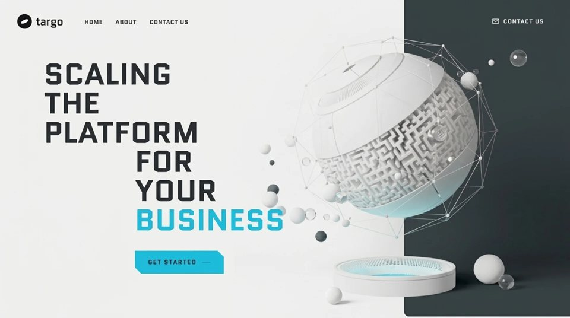

Scaling Platform
SaaSsaasyilai-ai 公开页面
收录时间：2026-08-23正文：5,284 字符

本地预览图 · jpeg
完整提示词
# Prompt: Recreate the Targo hero + about sections
Build a single-page site with exactly two sections. Font: **Quantico** (Google Fonts, weights 400 + 700), fallback 'Arial Narrow', sans-serif. Accent color: **#15BCDF** (hover #3fd0ef, border #0fa3c2). Page/body background: **#F2F1F0**. Text colors: headings #2b3033, nav links #3a3a3a, body gray #6b6f72. All headings uppercase, letter-spacing 0.01em, line-height 0.98.
## Section 1 — Hero (min-height: 100svh, background #F2F1F0, overflow hidden)
**Background video** (absolutely positioned, pointer-events none, no crop — objectFit: contain, height auto):
`https://d8j0ntlcm91z4.cloudfront.net/user_38xzZboKViGWJOttwIXH07lWA1P/hf_20260823_050407_500d0339-ab28-41c1-9688-132a74a3b5aa.mp4`
- Desktop: top 0, right -20%, width 99%.
- Mobile (≤700px): top 0, left -12%, width 119%.
- Attributes: autoplay, muted, loop, playsinline, preload auto. Robustness: retry `video.play()` every 1s and on first document click/touchstart (always set muted before play, swallow rejections).
- Desktop only: a scrim overlay on the left 70% of the section, `linear-gradient(90deg, #F2F1F0 0%, #F2F1F0 55%, rgba(242,241,240,0.85) 78%, rgba(242,241,240,0) 100%)`, no scrim on mobile.
**Navbar** (relative, flex, wrap, gap clamp(20px,5vw,56px), padding clamp(20px,3vw,38px) clamp(20px,4vw,48px) 0):
- Logo: 38px dark (#111) circle containing a white 20×8px ellipse rotated -25°, next to lowercase word "targo" (font-size clamp(22px,5vw,30px), weight 400, color #111, letter-spacing -0.5px).
- Links HOME / ABOUT / CONTACT US: bold 700, font-size clamp(12px,2.4vw,15px), letter-spacing 0.06em, color #3a3a3a, nowrap, gap 34px. Hidden on mobile.
- Right-aligned "Contact us" button (desktop only): transparent, **no border**, white text, uppercase, letter-spacing 0.14em, padding 14px 26px, chamfered corners via `clip-path: polygon(0 0, calc(100% - 12px) 0, 100% 12px, 100% 100%, 12px 100%, 0 calc(100% - 12px))`, with a white stroked mail-envelope SVG icon (17×13, stroke-width 1.4). Hover: background rgba(255,255,255,0.14).
- Mobile: hamburger button (3 white 22×2px bars, gap 5px) replacing links + contact button; tapping toggles a stacked menu of the 3 links (dark #1a1c1e, bold, gap 18px).
**Headline** (h1, 6 staircase lines, uppercase, weight 700):
```
SCALING
THE
PLATFORM
FOR
YOUR
BUSINESS ← this line in #15BCDF
```
Last three lines indented by `min(238px, 28vw)`.
- Desktop: padding `min(clamp(40px,9vw,120px),9vh) 20px min(clamp(24px,4vw,44px),5vh) clamp(20px,9vw,118px)`; font-size `min(clamp(34px,7.6vw,80px), 9.2vh)` (vh caps keep headline + button inside 100vh on short monitors).
- Mobile: margin-top 360px (text sits below the video), padding `0 20px 28px 20px`, font-size `clamp(34px,10vw,56px)`.
**CTA button** "GET STARTED" under the headline, left edge aligned with the FOR/YOUR/BUSINESS indent (left padding `calc(clamp(20px,9vw,118px) + min(238px,28vw))`, bottom padding `min(clamp(36px,6vw,80px),7vh)`). Style: background #15BCDF, border 1px solid #0fa3c2, dark text #1a1c1e, uppercase, weight 700, letter-spacing 0.14em, padding 18px 34px, font-size clamp(13px,2.2vw,16px), chamfered corners `clip-path: polygon(0 0, calc(100% - 16px) 0, 100% 16px, 100% 100%, 16px 100%, 0 calc(100% - 16px))`, glow `box-shadow: 0 0 0 1px rgba(21,188,223,0.35), 0 10px 30px -12px rgba(15,163,194,0.6)`, trailing 22×1px dark line. Hover: background #3fd0ef, stronger glow.
## Section 2 — About (flex, wrap, align center, gap 40px)
Background: `linear-gradient(180deg, #F2F1F0 0%, #F7F6F8 18%, #F7F6F8 100%)` (smooth handoff from hero). Padding: `clamp(60px,10vw,140px) 0 clamp(30px,5vw,70px) clamp(20px,9vw,118px)` — **no right padding** so the media touches the right screen edge.
**Left column** (flex 1 1 420px, min-width 300px):
- h2, two staircase lines: "ABOUT" then "BUSINESS" in #15BCDF indented by `min(160px,18vw)`. Font-size clamp(34px,6.5vw,72px), weight 700, uppercase.
- Paragraph (max-width 520px, margin 32px 0 0 min(160px,18vw), font-size clamp(14px,1.6vw,17px), line-height 1.7, color #6b6f72), text verbatim:
"Targo builds the testing infrastructure modern teams rely on. From automated pipelines to full-scale QA audits, we make sure your software ships fast and breaks nothing. Hundreds of releases, zero surprises."
- "LEARN MORE" button, identical style to the hero CTA, margin 36px 0 0 min(160px,18vw).
**Right column** (flex 1 1 360px, min-width 280px, justify-content flex-end, position relative):
- Video, width 100%, max-width 644px, height auto, flush to the right edge:
`https://d8j0ntlcm91z4.cloudfront.net/user_38xzZboKViGWJOttwIXH07lWA1P/hf_20260823_063501_2e2c8971-de1e-473a-8611-a0c9ae7ee186.mp4`
Same attributes + autoplay-retry logic as the hero video.
- Overlay rectangle exactly covering the video (absolute, top 0, right 0, width 100%, max-width 644px, height 100%): background **#15BCDF** with `mix-blend-mode: hue`, pointer-events none, z-index 1 (tints the video cyan).
## Global
- `body { margin: 0; background: #F2F1F0; }`; links: color #3a3a3a, no underline, hover #000.
- Mobile breakpoint: 700px (JS-driven via window.innerWidth + resize listener, or media queries).
- No other sections, no footer.把上面的提示词完整复制到支持长文本的 AI 工具中，再按需要替换品牌名、配色与文案。提示词描述的是整页结构与动效节奏，生成后建议在真实浏览器里检查首屏加载和移动端表现。
来源与版权
该条目来自公开提示词页面，原始出处信息未随页面提供。
提示词文本与预览素材的版权归原作者或原平台所有，本站仅作索引与归档。若你是权利人并希望移除本条内容，请通过联系方式告知。